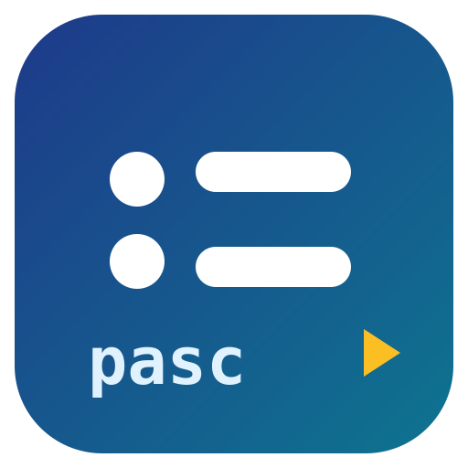

pasc
Pascal for learning: an interpreter that behaves like fpc, with friendly errors, style checks and pascdb, a step-by-step visual debugger.
$ pasc barcos.p
barcos.p:23:2: warning: write else on its own line, right under the end
barcos.p:41:4: error: loops nested 3 deep in procedure "jugar"
$ pascdb barcos.p
# step through it in the browser